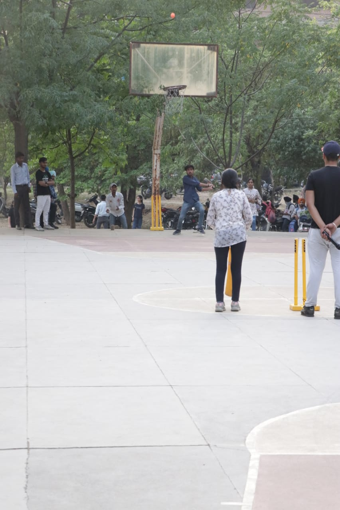
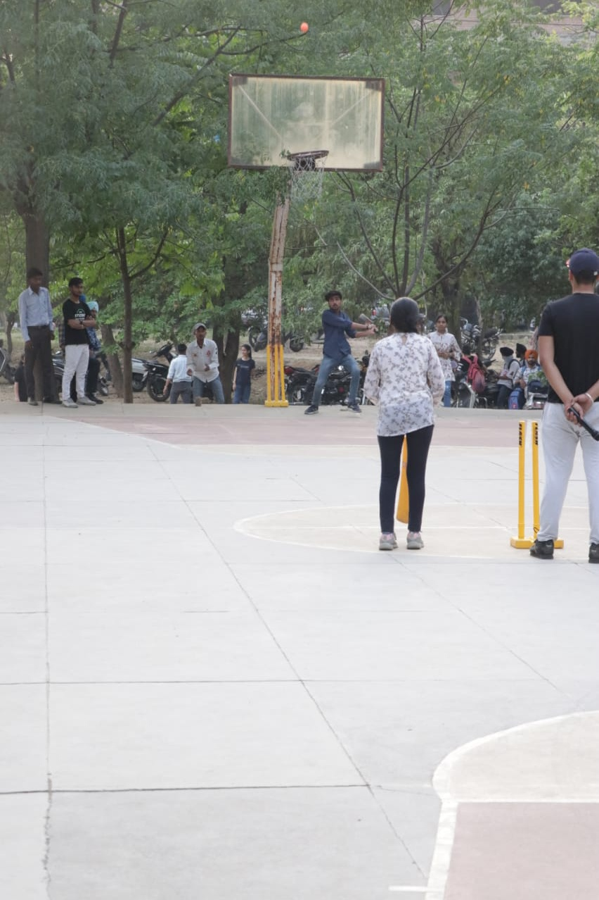

Engineering & technology
Electronics & Communication Engineering
The course has been engaged in promoting technical education in the fast growing field
of Electronics and Communication. The course provides a well designed curriculum that
facilitates a unique blend of theory and practical to help students assimilate the subject
thoroughly. The department is equipped with state-of-the-art facilities for devices and circuits
Lab., digital electronics Lab, communication systems Lab, microprocessor lab, measurement lab,
instrumentation lab printed circuits board lab and electronics design automation lab.
Electronics & Computer Engineering
The course has been engaged in promoting technical education in the fast growing field of
Electronics and Computer. The course provides a well designed curriculum that facilitates a
unique blend of theory and practical to help students assimilate the subject thoroughly. The
department is equipped with state-of-the-art facilities for devices and circuits Lab., digital
electronics Lab, computer systems Lab, microprocessor lab, measurement lab, instrumentation lab
printed circuits board lab and electronics design automation lab. The computer lab of the
department is well equipped with latest PCs supported with internet connectivity of 20Mbps
(leased line). Department is graced with a distinguished and highly qualified faculty. For the
practical understanding and exposure of the technology, students are encouraged by the
department to take up projects in diverse areas related to electronics and computer. The
students of the department are also motivated to participate in various co-scholastic activities
like mock campus interviews, group discussions, and seminars to hone soft-skills and enrich
their personalities.
Computer Science & Engineering
The course provides a well designed curriculum that helps students to assimilate the subject
theoretically and practically. The computer labs of the department are well equipped with latest
PCs supported with leased line based internet connectivity of 20Mbps. Moreover, the department
is graced with distinguished and highly qualified faculty. For the practical exposure of the
technology, students are encouraged by the department to take up projects in diverse areas
related to computer science & engineering. The students of the department are also encouraged to
participate in various co-scholastic activities to sharpen soft-skills and enrich their
personalities. The department has excellent campus recruitment for placements in prestigious
companies.
Law
Law is a career stream that aspirants can pursue at undergraduate (UG), postgraduate (PG) or
doctorate (PhD) level to practice the legal profession in India. Law as a career is very popular
among students in India. The popularity of this stream can be judged from the fact that famous
people like Mahatma Gandhi, Nelson Mandela as well as the former US President Barack Obama were
lawyers.Law is the study of Scope of law as a career is immense in India. These days, law graduates
do not just opt to get dressed in black and white apparels and head to court but also make their
presence feel in corporate houses, law firms, law agencies, administrative services and the likes.A
career in law requires one to put in a lot of hard work and long working hours spent in legal
research. The preferred specialisations in law are either criminal or civil. However, these days
other branches are also gaining popularity such as cyber law, patent law as well as corporate law.
The Department have Multimedia labs, Moot Court for practical purposes. The Legal Aid Cell is
running successfully in the Department which provides legal aid to the needy persons. The Department
organize Legal Aid camps within the periphery of Jalandhar for the awareness of legal services among
the Society. Besides this the department also organize various Extra-Curricular competitive
activities like Debates, Moot Courts, Seminars etc. to enhance the skills of students. The
Department also possesses certain precious asset in the form of very knowledgeable and hardworking
faculty. Department also has excellent and well equipped Library, a well maintained Computer-Lab
which provides access to students and staff. Many students of Law Department Jalandhar have been
selected as PCS(judicial)
The admission process of the course is based on State level counseling on merit basis. The
Department is having well qualified and experienced faculty members who provide guidance to the
students not only for the law course but also for the other future opportunities available to the
students after becoming law graduates.
Journalism & Mass Communication
Mass Communication is a medium of dispersing information to a large number of people. The term is not
limited to only journalism but spreads its branches to various other media fields including
newsgathering and reporting, film direction and production, event management, public relations,
advertising, corporate communication, and the list continues. In recent years, the field of mass
communication and media has evolved into a partially interactive concept that touches almost every
aspect of human life. And, with the sheer proliferation of media into our lives through newspaper,
television, and the internet the field of mass communication is gaining popularity like never
before. The course offers numerous career opportunities to candidates which are not only high paying
but also bring in job satisfaction and expression of
In addition
to teaching students about journalism, the department requires its majors to complete a
substantial emphasis in another discipline, which will add depth to your professional skills and
broaden your options for employment.
While you’re a student, you’ll be able to gain professional experience.ournalism and mass
communication graduates work nationwide and worldwide at newspapers and magazines and in
advertising, branding, broadcast news, social media, marketing, media research, photojournalism,
publication design, public relations, radio, and other areas.
As communications media expand, so do job opportunities. More and more graduates are finding
their first jobs in online social media.
A degree in Journalism and Mass
Communication will help you fulfil your ambitious dreams. It will not just enhance your chances
of getting a ticket to the newsroom but also be useful in other fields, such as communications,
marketing, education, and
There's an ever-increasing
scope for aspirants in the field of Journalism and Mass Communication, considering the
growing popularity of mass communication mediums. Its scope in India is wide, if you can do
well in your field, you can work with some of the best publishing houses, production houses,
news channels, radio channels, or PR firms of the country.

 
